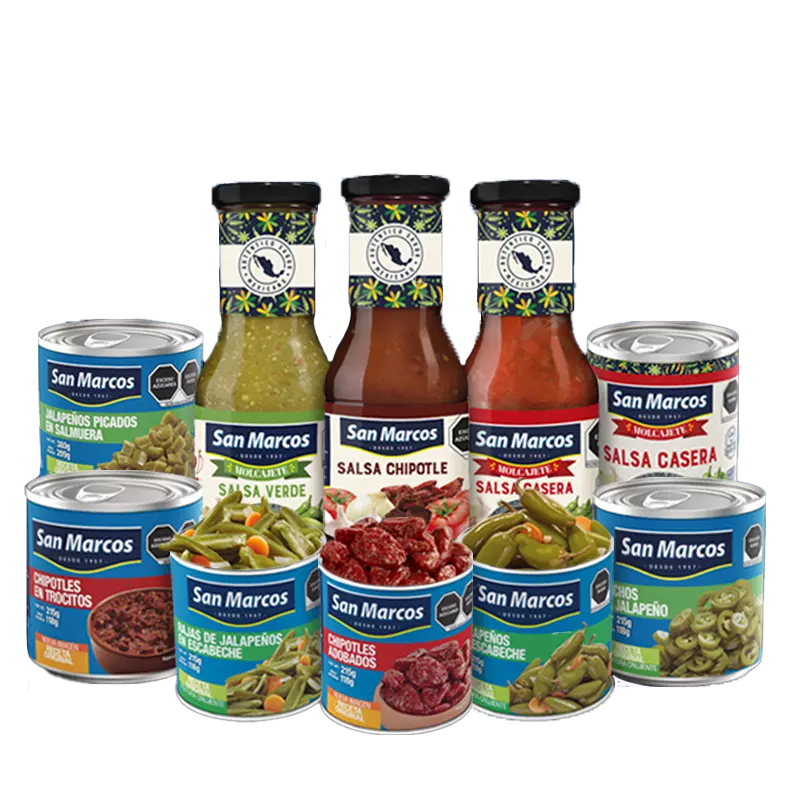

We respect and promote respect for internationally recognized human rights set forth in the International Charter of Human Rights, in the American Convention on Human Rights, in the fundamental principles and rights, at work contained in the ILO declaration regarding the principles and fundamental rights at work and in the fundamental conventions of the international labor organization. Likewise, the United Nations Guiding Principles on Business and Human Rights, the OECD Guidelines for Multinational Enterprises, and the UN WEP Women’s Economic Empowerment Principles.